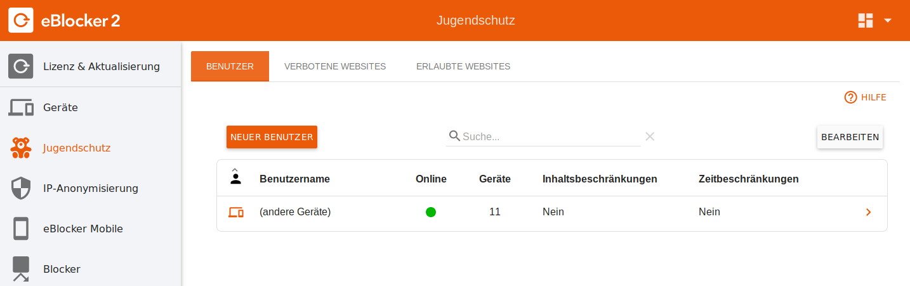
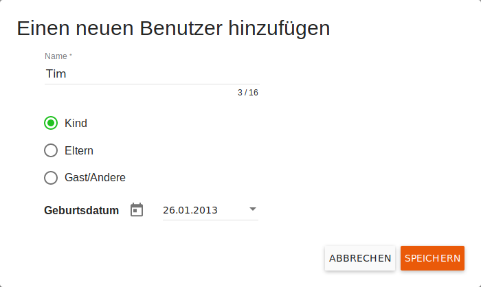
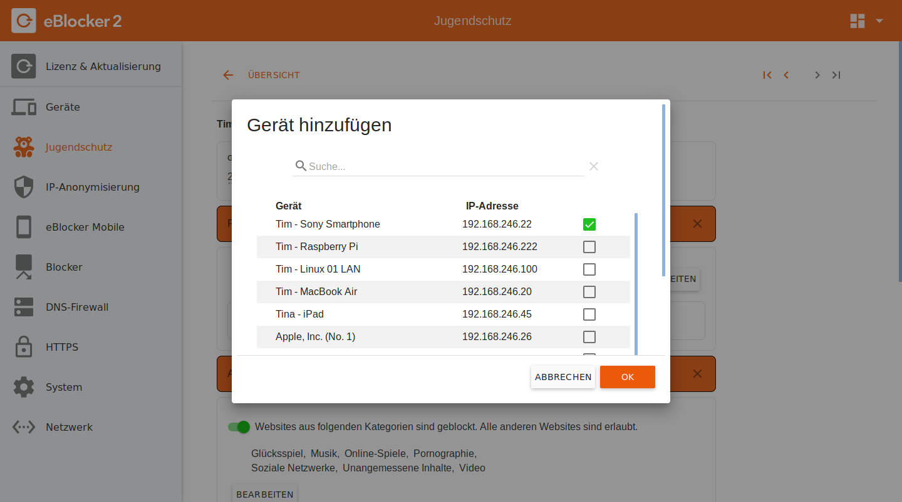
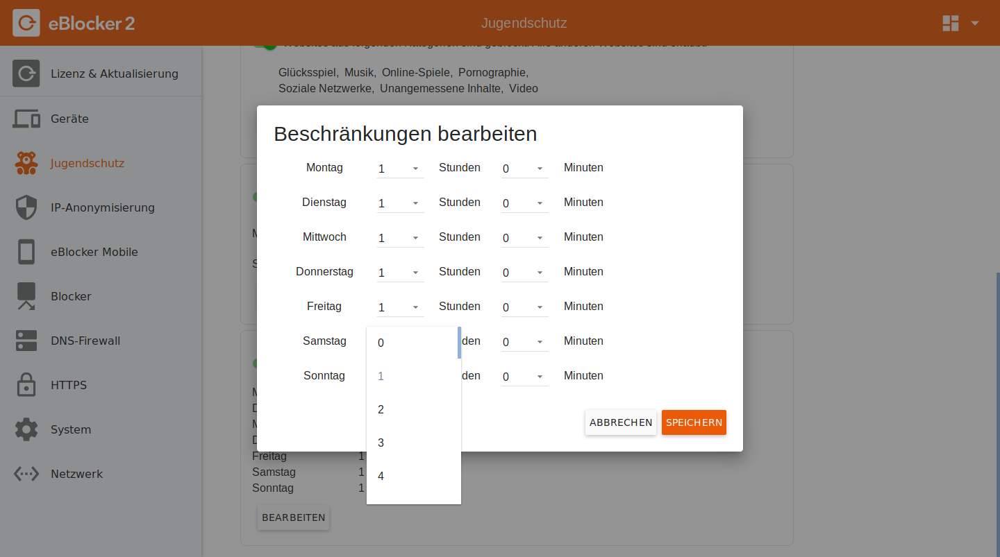

Deutsch | English
eBlocker Hilfe > Wissensdatenbank > Anwendungsmöglichkeiten
Um den Jugendschutz zu nutzen, muss ein Passwort für den eBlocker-Administrator festgelegt werden. Niemand außer dem Administrator kann auf die eBlocker-Einstellungen zugreifen und die Kindersicherung deaktivieren.
Das Administrator-Passwort können Sie unter "eBlocker-Einstellungen > System" auf der Registerkarte "Admin-Passwort" festlegen.
Gehen Sie zum Menü "eBlocker-Einstellungen > Jugendschutz".
Seit eBlocker OS 2.3.2 werden alle Einschränkungen als Teil der Benutzerattribute festgelegt. Es gibt keine separaten Profileinstellungen mehr.
Einen Benutzer anlegen
Einstellungen > Jugendschutz > Benutzer

Erstellen Sie zunächst einen neuen Benutzer, indem Sie auf die Schaltfläche Neuer Benutzer klicken. Geben Sie einen Namen ein und wählen Sie die Hauptrolle des neuen Benutzers aus. Wenn Sie ein Kind hinzufügen, werden Sie aufgefordert, seinen Geburtstag einzugeben. Daher werden standardmäßig altersgerechte Empfehlungen aktiviert. Nachdem der Dialog Neuer Benutzer durch Klicken auf Speichern geschlossen wurde, wird die Seite Benutzerdetails Einstellungen geöffnet.

Benutzerdetaileinstellungen
Einstellungen > Jugendschutz > Benutzer > Benutzerdetails
Alle mit dem Stift-Symbol markierten Details können durch Anklicken des Stiftes geändert werden.
Im ersten Abschnitt der Seite Benutzerdetails können Sie die grundlegenden Informationen über den Benutzer ändern. Sie können nun sowohl die grundlegenden Benutzerdaten wie Geburtsdatum, Rolle als auch eine optionale PIN mit bis zu 16 Ziffern für diesen Benutzer definieren. Wenn ein Gerät durch die eBlocker-Kindersicherung geschützt ist, muss diese PIN beim Wechsel des Benutzers eingegeben werden. Das Alter wird entsprechend dem eingegebenen Geburtstag angezeigt.
Ordnen Sie ihnen alle Geräte zu, die auch von Kindern, Jugendlichen und Gästen verwendet werden, indem Sie auf die Schaltfläche Gerät hinzufügen klicken, um ein entsprechendes Dialogfenster zur Auswahl der Geräte zu öffnen. Mit Bearbeiten können Sie ein oder mehrere Geräte aus der Tabelle entfernen.
Wählen Sie die Schaltfläche Gerät hinzufügen, um dem Benutzer, den Sie bearbeiten, ein Gerät zuzuordnen. Es erscheint ein entsprechendes Dialogfenster zur Auswahl des/der Geräte(s).
Es kann jeweils nur ein Benutzer einem Gerät zugeordnet werden. Ein Benutzer hingegen kann mehreren Geräten zugeordnet werden - z.B. allen Geräten eines Kindes. Das Gerät kann weiterhin von anderen genutzt werden, da sie mit ihrer PIN die Verantwortung übernehmen.

Geräte, die keinem Benutzer zugeordnet wurden, unterliegen nicht der Jugendschutzregelung. In diesen Fällen ist ein globaler Schutz möglich.
Blockieren von Websites bestimmter Kategorien
Um nicht jede unerwünschte Website einzeln eingeben zu müssen, stellt Ihnen eBlocker Kategorien von Webseiten zur Verfügung. Kategorien können für jeden einzelnen Benutzer gesperrt werden.
Um nun bestimmte Kategorien für ein Profil auszuwählen, aktivieren Sie den Schiebeschalter "Der Zugriff auf Websites ist nicht eingeschränkt" und klicken Sie auf die zu blockierenden Kategorien.
Wenn Sie mit der Maus über die Liste der Kategorien fahren, informiert Sie ein Tooltip über den Inhalt der Kategorien. Die einzelnen Kategorien werden nachts automatisch mit den regelmäßigen eBlocker-Updates aktualisiert.
Sie können Kategorien als Ausnahmen definieren, z.B. für die fragFinn-Suchmaschine.
Bitte beachten Sie, dass Sie diese Einstellungen speichern müssen.

Anrufe auf Websites und Verbindungsanrufe zu Apps, die diesen Einschränkungen unterliegen, werden nun von eBlocker auf allen diesem Profil zugeordneten Geräten gesperrt. Anstelle der gewünschten Website erscheint eine entsprechende Meldung im Browser.
Zugriffszeiten einstellen
Wenn Sie möchten, dass Ihre Kinder sich etwas Zeit für echte Freunde, Hausaufgaben oder andere Aktivitäten frei halten, dann können Sie ihnen nur in bestimmten Zeitabständen einen Internetzugang gewähren. Aktivieren Sie einfach den zweiten Schiebeschalter, so dass die Zeiten begrenzt sind. Hier können Sie neue Zutrittszeitfenster hinzufügen oder mit dem Bleistift-Symbol ändern. Mit dem "-" wird der Eintrag sofort gelöscht. Bitte beachten Sie, dass Sie diese Einstellungen speichern müssen.

Wenn Sie Zeitlimits definieren, werden von den zugeordneten Geräten außerhalb der zulässigen Zeiten keine Internetverbindungen zugelassen. Der eBlocker zeigt dann eine entsprechende Meldung auf dem Gerät an.

Achtung: Ist kein Zeitraum angegeben, ist ein Internetzugang jederzeit möglich.
Achtung: Mit einem Klick auf den Button "Konfiguration" kann der eBlocker-Administrator auf die Einstellungen des eBlockers zugreifen.
Die Beschränkung des Internetzugangs gilt für alle Apps und Websites. Online-Spiele oder Anwendungen, die eine Verbindung zu einem Server erfordern, können möglicherweise nicht gestartet werden oder einen Fehler anzeigen.

Jugendschutz auf dem eBlocker Dashboard
Sobald ein Benutzer einem Gerät zugeordnet ist, erscheinen zwei neue Karten im eBlocker Dashboard.

Die Karte "Online Time" dient dazu, definierte Zeiträume im Auge zu behalten und bei zeitlichen Einschränkungen die Nutzung des Internets zu starten und zu stoppen.
Die Karte "Benutzer" zeigt den aktuellen Benutzer des Gerätes an und ermöglicht es Eltern, z.B. ein Gerät zu übernehmen oder zu blockieren.
Wenn die beiden Karten nicht sichtbar sind, können Sie jederzeit auf das Dashboard-Symbol in der rechten oberen Ecke des Dashboards klicken und die Karten auf dem Dashboard anzeigen.
Das Gerät hat auch eine eigene Controllbar, die sich leicht von der normalen Controllbar unterscheidet. Bei Geräten, die mit Kindersicherungsprofilen geschützt sind, ist es nicht mehr möglich, auf die eBlocker-Einstellungen zuzugreifen, den eBlocker für das Gerät anzuhalten oder die eBlocker-Hilfe aufzurufen. Stattdessen werden der Profilname und die zulässigen Zeiten für den Internetzugang angezeigt.